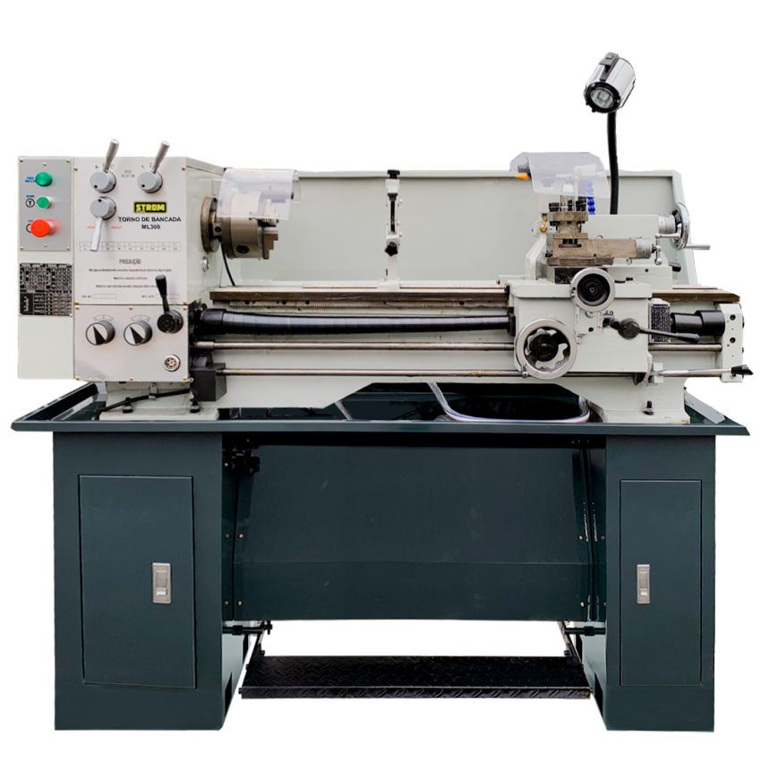

Torno CNC — CNC-01
Aponte a câmera para a imagem de identificação cadastrada. Toque nos pontos para consultar as informações.
Preparando a câmera… permita o acesso quando solicitado.

Como utilizar
Quando o target for reconhecido, os quatro pontos ficarão ancorados à imagem. Toque em um ponto para abrir as informações.
Aviso: temperatura, vibração e status são dados fictícios para fins acadêmicos. Não representam limites oficiais de operação ou segurança.